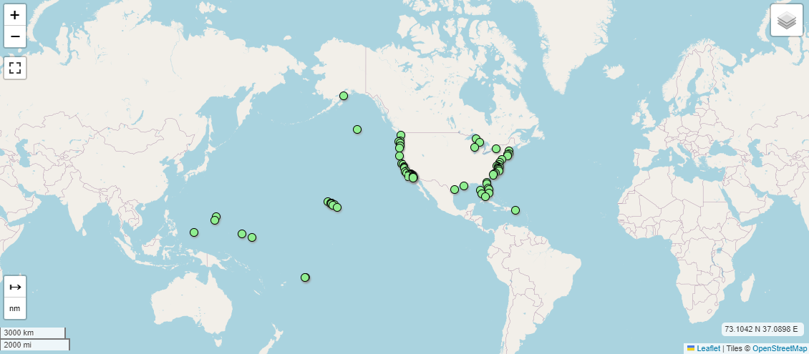
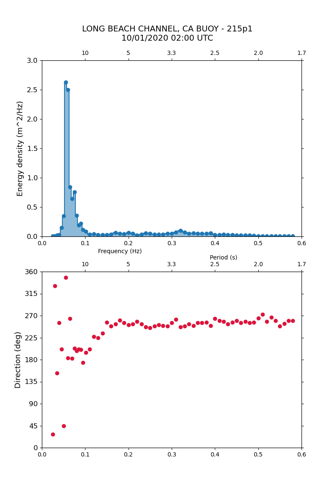

What is a water wave spectrum
Bernabe Gomez
A water wave spectrum is a graphical representation that shows the distribution of energy across different wave frequencies (or wavelengths) in a body of water. It provides a detailed description of the sea state, indicating how the energy of the waves is spread over a range of frequencies or directions
The relation between period and frequency
\[ T = \frac{1}{f} \]
where f is the frequency in Hertz [Hz] and T is the period in seconds [s].
In the most common type of wave spectrum, the horizontal axis represents wave frequency or wave period, while the vertical axis shows the energy density (measured in square meters per Hertz, \( \frac{m^2}{Hz} \)). The shape of the spectrum can provide insights into the wave conditions:
Where to find data
he Coastal Data Information Program (CDIP) provides spectral data collected from various locations where they have deployed wave buoys.
Analysis of the data
In my Github page you can find python codes to extract, plot and analyze CDIP data Github
The first step is to locate the location that you are interested in and the closest buoy to that point in the CDIP interactive explorer
Interactive CDIP map with deployed buoy locations
Once the buoy and its ID code are identified we can proceed to the extraction of the data. For our case we have selected the station 215 with an start date for the data that we need 10/01/2020 02:00.
We are extracting the data in the format netCDF, it is recommended intalling the python library netCDF4 in the environment that we are working on.
Extracted data, top: frequency spectrum; bottom: average frequency directions
In our example we are extracting 1 dimensional spectrum, which means that we have for each frequency bin only one estimate of the average frequency density and direction. In the script provided on my github page you can find functions to save your data in .txt files for future use.